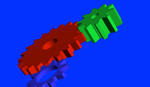

Display hardware-rendered content using OpenGL ES 2.x
gles2-gears [-bg-alpha=background_alpha_value] [-brightness=brightness] [-config=egl_configuration] [-contrast=contrast] [-display=display_id] [-fg-alpha=foreground_alpha_value] [-frame-limit=frame_limit] [-hue=hue] [-interval=swap_interval] [-nbuffers=count] [-pipeline=pipeline_id] [-pos=x,y] [-saturation=saturation] [-size=widthxheight] [-transparency=transparency_mode] [-verbose] [-zorder=zorder]
QNX OS
Set the background to the specified alpha value as a float in the range [0.0f..1.0f]. If you don't specify the bg-alpha option, then gles2-gears uses 0.0f.
Set optional EGL configuration specifiers. These optional configuration specifiers are set using a comma-separated list. The specifiers may include the following: pixel format and/or multi-sampling specifications, or an EGL configuration number. If you're using an EGL configuration number, it must not be specified with other specifiers.
Specify pixel format as one of the following:
where "a" indicates alpha bits and "x" indicates ignored bits.
Specify multi-sampling as:
[rate]x
where rate is a valid sampling rate (e.g., 2, 4, 8, ...).
For example, the following are all valid ways of specifying the EGL configuation option:
If no specific EGL configuration is provided, this utility uses the platform-specific EGL configuration. Use egl-configs to determine the the EGL configurations that are supported on your target.
Whether by integer or by string, the display that you specify using display_id must be one of the displays that you've configured in the display subsections of the winmgr section in your configuration file (e.g., graphics.conf).
If you don't have any display subsections configured, or if you don't specify the display option, then gles2-gears uses the default display.
Set the foreground to the specified alpha value as a float in the range [0.0f..1.0f]. If you don't specify the fg-alpha option, then this utility uses 1.0f.
If you use this option, Screen applies the SCREEN_USAGE_OVERLAY usage flag and uses the pipeline specified by pipeline_id.
| Transparency mode | Description |
|---|---|
| none | Default mode; result is an opaque window |
| test | Destination pixels are replaced by source pixels; pixels may be opaque or fully transparent |
| src | Destination pixels are replaced by source pixels, including the alpha channel; window will be blended with contents underneath it |
The gles2-gears binary is a command-line tool that can be used to confirm that screen is running, and that all necessary drivers for OpenGL ES 2.x are in place, and can start successfully.
To run gles2-gears:
# gles2-gears
